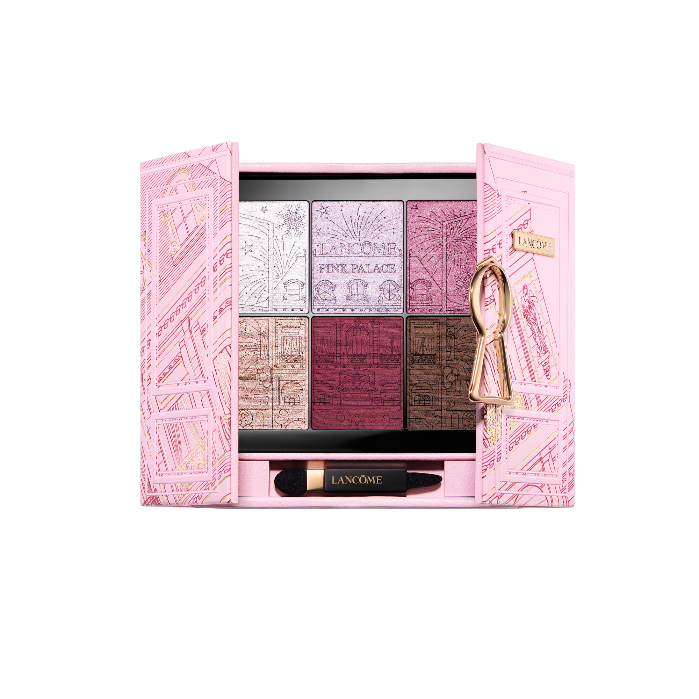
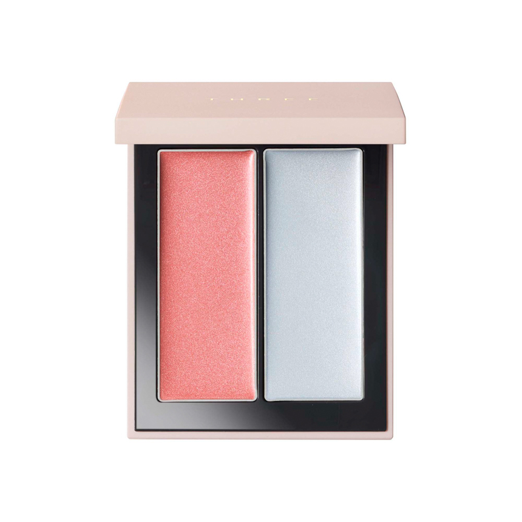
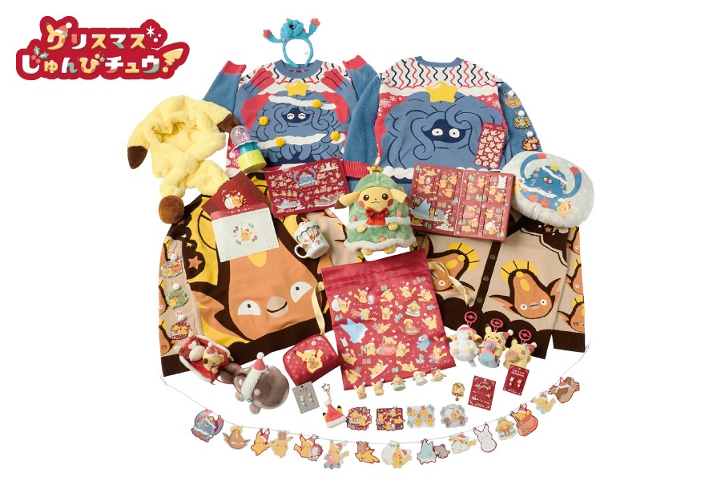
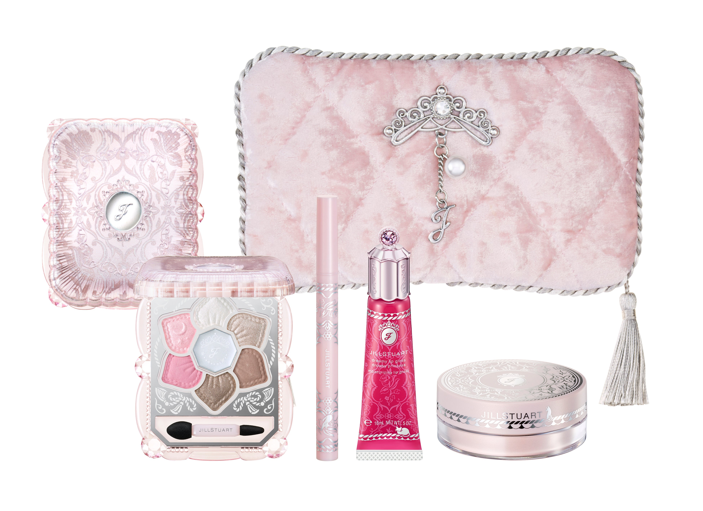
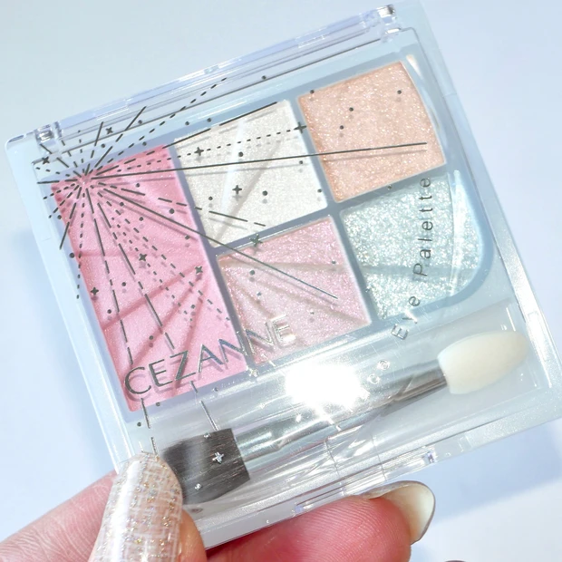
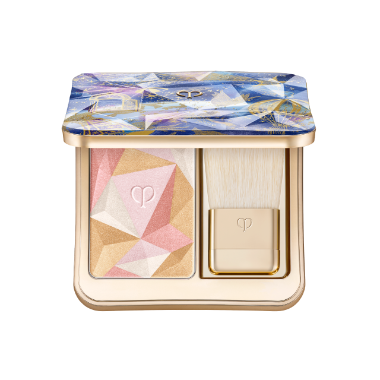
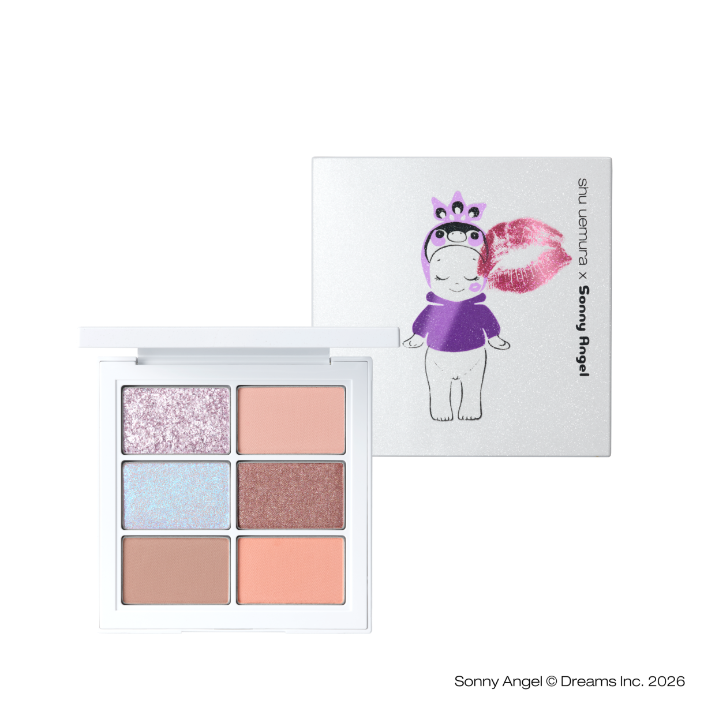
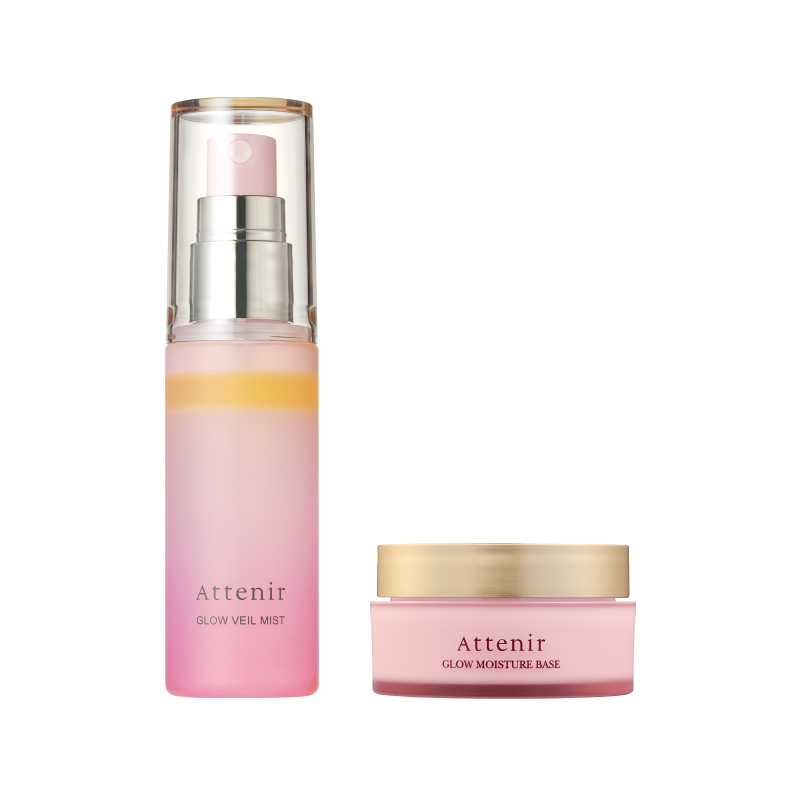
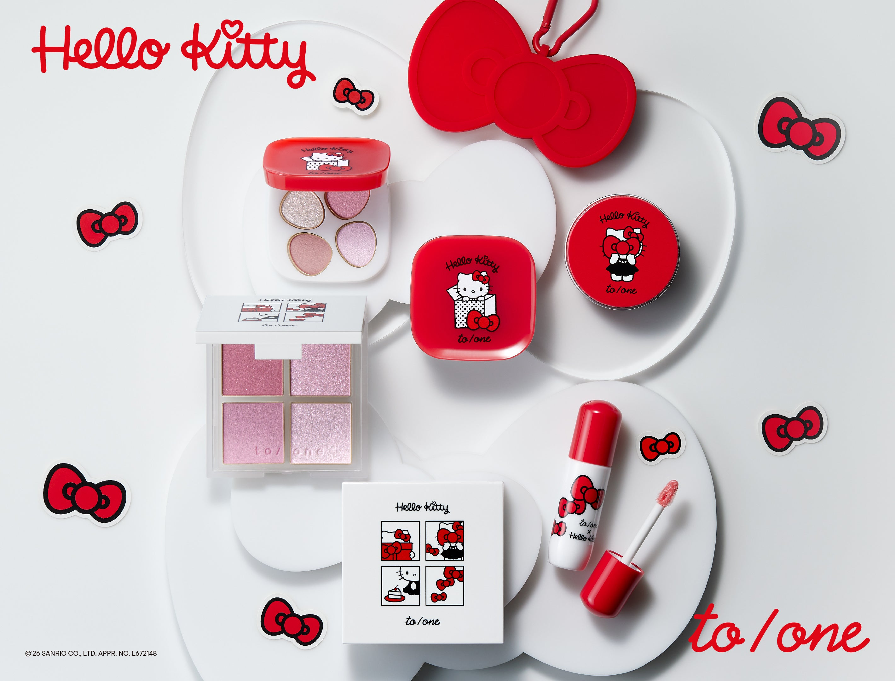
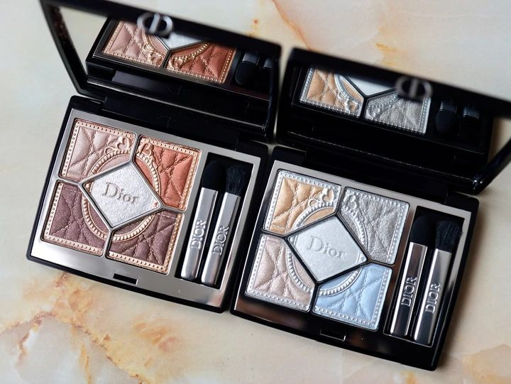

NEW RELEASES / JAPAN想买的新品，
想买的新品，
别错过时间。
先查预约与开卖日期，再看产品图和试色。
本期收录38 项美妆 · 8 项周边美妆新增20项线索 · 含待核实预告
新品时间表2026年11月
预约、先行、正式开卖分开看 · 所有时间均为日本时间
· 首批美妆10/14；新增20项10/19检索（核实级别逐项注明）；宝可梦10/19。日期为公告安排，不表示实时库存。
| 产品 / 日本含税价 | 线上预约 / 先行 | 所列渠道开卖 | 来源 / 图文 / 店头安排 |
|---|---|---|---|
| N01 · DECORTÉ 黛珂2026-10-14记录：线上预约入口已显示紫丝带精华限定套装美妆 · 日本含税 ¥17,600 | 高岛屋TBEAUT：10/6 10:00起；页面有预约购买入口先行销售 ≠ 预约 | 11 / 012026 · 日本时间 | 渠道与核验说明店头：重点门店：近铁本店（天王寺）／大丸心斋桥，预约安排及余量均待逐店核实。渠道参考：高岛屋日历：9/14起；各柜剩余额度待询 先行／差异：未核实 日文名：リポソーム アドバンスト リペアセラム パープルリボン セット 2026 选题看点：原清单已收录；选品后再补定向测评。 素材：请查看对应图文及来源说明。 补充来源：交叉核验 ↗ 记录状态：线上预约入口已显示（截至2026-10-14，非实时库存） |
| N02 · DECORTÉ 黛珂2026-10-14记录：线上预约入口已显示紫丝带面霜限定套装美妆 · 日本含税 ¥12,100 | 高岛屋TBEAUT：10/6 10:00起；页面有预约购买入口先行销售 ≠ 预约 | 11 / 012026 · 日本时间 | 渠道与核验说明店头：重点门店：近铁本店（天王寺）／大丸心斋桥，预约安排及余量均待逐店核实。渠道参考：高岛屋日历：9/14起；各柜剩余额度待询 先行／差异：未核实 日文名：リポソーム アドバンスト リペアクリーム パープルリボン セット 2026 选题看点：原清单已收录；选品后再补定向测评。 素材：请查看对应图文及来源说明。 补充来源：交叉核验 ↗ 记录状态：线上预约入口已显示（截至2026-10-14，非实时库存） |
| N03 · DECORTÉ 黛珂2026-10-14记录：店头预约期已开始／线上未开始AQ光采护肤礼盒III（暂译）美妆 · 日本含税 ¥17,600 | 高岛屋TBEAUT：10/21 10:00开始先行销售 ≠ 预约 | 11 / 162026 · 日本时间 | 原始公告 ↗图文待整理 渠道与核验说明店头：重点门店：近铁本店（天王寺）／大丸心斋桥，预约安排及余量均待逐店核实。渠道参考：高岛屋日历：9/14起；各柜剩余额度待询 先行／差异：未核实 日文名：AQ ラディアンス コフレ III 选题看点：原清单已收录；选品后再补定向测评。 素材：请查看对应图文及来源说明。 补充来源：交叉核验 ↗ 记录状态：店头预约期已开始／线上未开始（截至2026-10-14，非实时库存） |
| N04 · PAUL & JOE2026-10-14记录：店头预约期已开始／线上未开始圣诞彩妆套装2026美妆 · 日本含税 ¥8,800 | 高岛屋TBEAUT：10/18 10:00开始先行销售 ≠ 预约 | 11 / 012026 · 日本时间 | 渠道与核验说明店头：重点门店：近铁本店（天王寺）／大丸心斋桥，预约安排及余量均待逐店核实。渠道参考：高岛屋日历：10/1起；各柜余量待询 先行／差异：未核实 日文名：メイクアップ コレクション 2026 选题看点：原清单已收录；选品后再补定向测评。 素材：请查看对应图文及来源说明。 补充来源：交叉核验 ↗ 记录状态：店头预约期已开始／线上未开始（截至2026-10-14，非实时库存） |
| N05 · PAUL & JOE2026-10-14记录：店头预约期已开始／线上未开始倒数日历2026美妆 · 日本含税 ¥33,000 | 高岛屋TBEAUT：10/18 10:00开始先行销售 ≠ 预约 | 11 / 012026 · 日本时间 | 渠道与核验说明店头：重点门店：近铁本店（天王寺）／大丸心斋桥，预约安排及余量均待逐店核实。渠道参考：高岛屋日历：10/1起；各柜余量待询 先行／差异：未核实 日文名：アドベント カレンダー 2026 选题看点：原清单已收录；选品后再补定向测评。 素材：请查看对应图文及来源说明。 补充来源： 记录状态：店头预约期已开始／线上未开始（截至2026-10-14，非实时库存） |
| N06 · SUQQU2026-10-14记录：预约未开始眼颊综合盘美妆 · 日本含税 ¥11,000 | SUQQU官网：10/23 09:30预约；11/1 10:00销售先行销售 ≠ 预约 | 11 / 012026 · 日本时间 | 渠道与核验说明店头：重点门店：近铁本店（天王寺）／大丸心斋桥，预约安排及余量均待逐店核实。渠道参考：大丸京都店公告：10/18预约；不能推定大阪同日 先行／差异：伊势丹新宿：10/21先行销售 日文名：アイ ＆ フェイス コンパクト 103 / 104 选题看点：原清单已收录；选品后再补定向测评。 素材：请查看对应图文及来源说明。 补充来源：交叉核验 ↗ 记录状态：预约未开始（截至2026-10-14，非实时库存） |
| N07 · SUQQU2026-10-14记录：预约未开始晶光唇膏限定色（含壳）美妆 · 日本含税 ¥6,050 | SUQQU官网：10/23 09:30预约先行销售 ≠ 预约 | 11 / 012026 · 日本时间 | 渠道与核验说明店头：重点门店：近铁本店（天王寺）／大丸心斋桥，预约安排及余量均待逐店核实。渠道参考：大丸京都店公告：10/18预约；各店另查 先行／差异：伊势丹新宿：10/21先行销售 日文名：モイスチャー グレイズ リップスティック 114 / 115 / 116 选题看点：原清单已收录；选品后再补定向测评。 素材：请查看对应图文及来源说明。 补充来源：交叉核验 ↗ 记录状态：预约未开始（截至2026-10-14，非实时库存） |
| N08 · LUNASOL2026-10-14记录：发售已确认／预约渠道待补四色眼影限定色美妆 · 日本含税 ¥7,700 | 先行渠道需逐色查库存；预约日期暂不统一填写先行销售 ≠ 预约 | 11 / 062026 · 日本时间 | 原始公告 ↗图文待整理 渠道与核验说明店头：重点门店：近铁本店（天王寺）／大丸心斋桥，预约安排及余量均待逐店核实。渠道参考：具体门店预约日待查；不套用先行活动日期 先行／差异：官方已公布11/6上市；10/9–10体验活动已结束 日文名：アイカラーレーションN EX18 / EX19 选题看点：原清单已收录；选品后再补定向测评。 素材：请查看对应图文及来源说明。 补充来源： 记录状态：发售已确认／预约渠道待补（截至2026-10-14，非实时库存） |
| N09 · LUNASOL2026-10-14记录：先行发售期／库存待查偏光单色眼影美妆 · 日本含税 ¥3,850 | 官网：10/7 10:00先行销售；售罄后11/6 10:00再开售先行销售 ≠ 预约 | 11 / 062026 · 日本时间 | 原始公告 ↗图文待整理 渠道与核验说明店头：重点门店：近铁本店（天王寺）／大丸心斋桥，预约安排及余量均待逐店核实。渠道参考：店头预约安排待核实 先行／差异：10/7官网先行已开始；当前分色库存未确认 日文名：モノアイカラーレーション EX21 / EX22 / EX23 选题看点：原清单已收录；选品后再补定向测评。 素材：请查看对应图文及来源说明。 补充来源： 记录状态：先行发售期／库存待查（截至2026-10-14，非实时库存） |
| N10 · shu uemura 植村秀2026-10-14记录：不接店头预约／等待先行发售Sonny Angel九色眼影盘美妆 · 日本含税 ¥11,000 | 官网：10/22 10:00先行销售；不是预约先行销售 ≠ 预约 | 11 / 022026 · 日本时间 | 原始公告 ↗图文待整理 渠道与核验说明店头：品牌官网明确本系列店头不接受预约；近铁本店（天王寺）／大丸心斋桥的发售安排与配额待逐店核实。 先行／差异：大阪：阪急梅田10/23；@cosme OSAKA 10/28先行 日文名：ダズリング ディメンションズ アイパレット 选题看点：原清单已收录；选品后再补定向测评。 素材：请查看对应图文及来源说明。 补充来源： 记录状态：不接店头预约／等待先行发售（截至2026-10-14，非实时库存） |
| N11 · shu uemura 植村秀2026-10-14记录：不接店头预约／等待先行发售Sonny Angel六色眼影盘美妆 · 日本含税 ¥7,920 | 官网：10/22 10:00先行销售；不是预约先行销售 ≠ 预约 | 11 / 022026 · 日本时间 | 渠道与核验说明店头：品牌官网明确本系列店头不接受预约；近铁本店（天王寺）／大丸心斋桥的发售安排与配额待逐店核实。 先行／差异：大阪：阪急梅田10/23；@cosme OSAKA 10/28先行 日文名：テイク ウィング! アイパレット 选题看点：原清单已收录；选品后再补定向测评。 素材：请查看对应图文及来源说明。 补充来源： 记录状态：不接店头预约／等待先行发售（截至2026-10-14，非实时库存） |
| N12 · ADDICTION2026-10-14记录：预约未开始假日唇妆组合I美妆 · 日本含税 ¥4,620 | 高岛屋TBEAUT：10/23 10:00预约先行销售 ≠ 预约 | 11 / 062026 · 日本时间 | 渠道与核验说明店头：重点门店：近铁本店（天王寺）／大丸心斋桥，预约安排及余量均待逐店核实。渠道参考：高岛屋日历：10/23预约；时刻问柜 先行／差异：未核实 日文名：ホリデー アディクション リップコンボキット I 选题看点：原清单已收录；选品后再补定向测评。 素材：请查看对应图文及来源说明。 补充来源：交叉核验 ↗ 记录状态：预约未开始（截至2026-10-14，非实时库存） |
| N13 · est2026-10-14记录：预约未开始圣诞限定护肤套装美妆 · 日本含税 ¥28,600 | 高岛屋TBEAUT：10/23 10:00预约先行销售 ≠ 预约 | 11 / 062026 · 日本时间 | 渠道与核验说明店头：重点门店：近铁本店（天王寺）／大丸心斋桥，预约安排及余量均待逐店核实。渠道参考：高岛屋日历：10/23预约；时刻问柜 先行／差异：未核实 日文名：エスト ホリデーコレクション 2026 选题看点：原清单已收录；选品后再补定向测评。 素材：请查看对应图文及来源说明。 补充来源：交叉核验 ↗ 记录状态：预约未开始（截至2026-10-14，非实时库存） |
| N14 · CLARINS 娇韵诗2026-10-14记录：预约未开始倒数日历2026美妆 · 日本含税 ¥18,700 | 高岛屋TBEAUT：10/30 10:00预约先行销售 ≠ 预约 | 11 / 132026 · 日本时间 | 原始公告 ↗图文待整理 渠道与核验说明店头：重点门店：近铁本店（天王寺）／大丸心斋桥，预约安排及余量均待逐店核实。渠道参考：高岛屋日历：10/30预约；时刻问柜 先行／差异：未核实 日文名：アドベントカレンダー2026 选题看点：原清单已收录；选品后再补定向测评。 素材：请查看对应图文及来源说明。 补充来源：交叉核验 ↗ 记录状态：预约未开始（截至2026-10-14，非实时库存） |
| N15 · JILL STUART2026-10-14记录：预约未开始睡美人限定混色腮红盘（暂译）美妆 · 日本含税 ¥4,950 | 高岛屋TBEAUT：11/6 10:00预约先行销售 ≠ 预约 | 11 / 132026 · 日本时间 | 渠道与核验说明店头：重点门店：近铁本店（天王寺）／大丸心斋桥，预约安排及余量均待逐店核实。渠道参考：品牌公告：11/6预约；具体柜台时刻另查 先行／差异：未核实 日文名：クチュール ミックスブラッシュ コンパクト ドロージープリンセス 102 / 103 选题看点：原清单已收录；选品后再补定向测评。 素材：请查看对应图文及来源说明。 补充来源：交叉核验 ↗ 记录状态：预约未开始（截至2026-10-14，非实时库存） |
| N16 · Clé de Peau Beauté 肌肤之钥2026-10-14记录：指定店预约期已开始／线上未开始四色综合眼影507美妆 · 日本含税 ¥10,340 507为部分门店限定；11/18仅代表原表所列渠道，非全国统一日期。大阪阪急梅田曾于10/14先行。 | 高岛屋TBEAUT：10/23 10:00预约先行销售 ≠ 预约 | 11 / 182026 · 日本时间 | 渠道与核验说明店头：重点门店：近铁本店（天王寺）／大丸心斋桥，预约安排及余量均待逐店核实。渠道参考：高岛屋日历：指定POP UP店9/15起；名古屋11/18、横滨11/25销售 先行／差异：一部店铺限定，不当全国统一发售日 日文名：オンブルクルールクアドリ 507 Aurora Gleam HOLIDAY 2026 选题看点：原清单已收录；选品后再补定向测评。 素材：请查看对应图文及来源说明。 补充来源：交叉核验 ↗ 记录状态：指定店预约期已开始／线上未开始（截至2026-10-14，非实时库存） |
| N17 · Clé de Peau Beauté 肌肤之钥2026-10-14记录：预约未开始高光112美妆 · 日本含税 ¥9,350 | 高岛屋TBEAUT：10/26 10:00预约先行销售 ≠ 预约 | 11 / 212026 · 日本时间 | 渠道与核验说明店头：重点门店：近铁本店（天王寺）／大丸心斋桥，预约安排及余量均待逐店核实。渠道参考：高岛屋日历：10/26预约；时刻问柜 先行／差异：未核实 日文名：ル・レオスールデクラ 112 Wishes Fulfilled HOLIDAY 2026 选题看点：原清单已收录；选品后再补定向测评。 素材：请查看对应图文及来源说明。 补充来源： 记录状态：预约未开始（截至2026-10-14，非实时库存） |
| N18 · NARS2026-10-14记录：预约未开始极地pH唇彩（暂译）美妆 · 日本含税 ¥5,280 | 高岛屋TBEAUT：11/6 10:00预约先行销售 ≠ 预约 | 11 / 202026 · 日本时间 | 原始公告 ↗图文待整理 渠道与核验说明店头：重点门店：近铁本店（天王寺）／大丸心斋桥，预约安排及余量均待逐店核实。渠道参考：高岛屋日历：11/6预约；时刻问柜 先行／差异：未核实 日文名：アークティック PHアジャスティング リップシーン 选题看点：原清单已收录；选品后再补定向测评。 素材：请查看对应图文及来源说明。 补充来源：交叉核验 ↗ 记录状态：预约未开始（截至2026-10-14，非实时库存） |
| N19 · ALBION 奥尔滨2026-10-19记录：官方已核实发售与价格EXCIA 限定彩妆四件套美妆 · 日本含税 ¥12,100 品牌明确官方网店不销售此套装；不能把官网专题当购买入口。 | 媒体报道店头10/1开始预约；两家目标门店额度待核实。先行销售 ≠ 预约 | 11 / 012026 · 日本时间 | 原始公告 ↗图文待整理 渠道与核验说明店头：近铁天王寺本店：待逐店核实；大丸心斋桥：待逐店核实。 先行／差异：未核实先行安排。 日文名：エクシア メイクアップ コレクション 选题看点：眼影102＋液体唇膏102限定色；可做玫瑰粉完整妆容。 素材：来源页有产品图；对应限定色的真实试色、上妆图尚需定向核验。 补充来源：交叉核验 ↗ 记录状态：官方已核实发售与价格（截至2026-10-19，非实时库存） |
| N20 · POLA2026-10-19记录：官方已核实发售与价格B.A 自选冬季护肤套装美妆 · 日本含税 ¥15,400 ¥15,400起，随主商品变化；不是固定价格套装。 | 媒体列百货10/1、官方线上10/22预约；具体入口与额度待核实。先行销售 ≠ 预约 | 11 / 012026 · 日本时间 | 原始公告 ↗图文待整理 渠道与核验说明店头：近铁天王寺本店：待逐店核实；大丸心斋桥：待逐店核实。 先行／差异：未核实先行安排。 日文名：B.A シンボリックコレクション 选题看点：可选主商品＋B.A迷你护理；适合按预算比较。 素材：来源页有产品图；对应限定色的真实试色、上妆图尚需定向核验。 补充来源：交叉核验 ↗ 记录状态：官方已核实发售与价格（截至2026-10-19，非实时库存） |
| N21 · RMK2026-10-19记录：官方已核实发售与价格卸妆油双瓶套装美妆 · 日本含税 ¥7,150 | 卸妆油媒体列10/16预约；其余两套预约未核实。先行销售 ≠ 预约 | 11 / 132026 · 日本时间 | 原始公告 ↗图文待整理 渠道与核验说明店头：近铁天王寺本店：待逐店核实；大丸心斋桥：待逐店核实。 先行／差异：两款W护理双瓶套装为原部分店限定的全国扩售。 日文名：セラム クレンジングオイル デュオ キット 选题看点：175mL×2；适合卸妆油回购清单。 素材：来源页有产品图；对应限定色的真实试色、上妆图尚需定向核验。 补充来源：交叉核验 ↗ 记录状态：官方已核实发售与价格（截至2026-10-19，非实时库存） |
| N22 · RMK2026-10-19记录：官方已核实发售与价格W护理油双瓶套装美妆 · 日本含税 ¥8,800 | 预约安排未核实。先行销售 ≠ 预约 | 11 / 132026 · 日本时间 | 原始公告 ↗图文待整理 渠道与核验说明店头：近铁天王寺本店：待逐店核实；大丸心斋桥：待逐店核实。 先行／差异：两款W护理双瓶套装为原部分店限定的全国扩售。 日文名：Wトリートメントオイル デュオ キット 选题看点：已有部分店销售，11月扩大到全国柜台；不是全新配方。 素材：来源页有产品图；对应限定色的真实试色、上妆图尚需定向核验。 补充来源：交叉核验 ↗ 记录状态：官方已核实发售与价格（截至2026-10-19，非实时库存） |
| N23 · RMK2026-10-19记录：官方已核实发售与价格W护理水双瓶套装美妆 · 日本含税 ¥8,360 | 预约安排未核实。先行销售 ≠ 预约 | 11 / 132026 · 日本时间 | 原始公告 ↗图文待整理 渠道与核验说明店头：近铁天王寺本店：待逐店核实；大丸心斋桥：待逐店核实。 先行／差异：两款W护理双瓶套装为原部分店限定的全国扩售。 日文名：Wトリートメント ローション デュオ キット 选题看点：双瓶组合＋UV日霜迷你；适合护肤囤货选题。 素材：来源页有产品图；对应限定色的真实试色、上妆图尚需定向核验。 补充来源：交叉核验 ↗ 记录状态：官方已核实发售与价格（截至2026-10-19，非实时库存） |
| N24 · LANCOME 兰蔻2026-10-19记录：官方已核实发售与价格粉色宫殿倒数日历美妆 · 日本含税 ¥66,000 仅阪急梅田、伊势丹新宿、银座三越、JR名古屋高岛屋及官方线上；公告未列近铁和大丸心斋桥。 | 官方：10/16在发售门店开始预约；当前名额需查询。先行销售 ≠ 预约 | 11 / 132026 · 日本时间 | 原始公告 ↗图文待整理 渠道与核验说明店头：近铁天王寺本店：待逐店核实；大丸心斋桥：待逐店核实。 先行／差异：官方线上11/6先行销售。 日文名：アドベント カレンダー 选题看点：24件跨护肤、香水、彩妆的礼盒；拆盒内容选题。 素材：来源页有产品图；对应限定色的真实试色、上妆图尚需定向核验。 补充来源：交叉核验 ↗ 记录状态：官方已核实发售与价格（截至2026-10-19，非实时库存） |
| N25 · YSL2026-10-19记录：官方已核实发售与价格圣诞迷你彩妆香水礼盒美妆 · 日本含税 ¥10,450 预约日依据媒体，具体门店需确认；先行是销售。 | 媒体：11/6全国预约；TBEAUT商品页确认11/13 10:00开卖。先行销售 ≠ 预约 | 11 / 132026 · 日本时间 | 原始公告 ↗图文待整理 渠道与核验说明店头：近铁天王寺本店：待逐店核实；大丸心斋桥：待逐店核实。 先行／差异：品牌提供的@cosme信息：11/4官网、表参道、伊势丹新宿先行。 日文名：YSL ノエル ギフトセット 选题看点：7.5mL Libre＋44号迷你唇膏＋迷你睫毛膏＋酒红化妆包。 素材：来源页有产品图；对应限定色的真实试色、上妆图尚需定向核验。 补充来源：交叉核验 ↗ 记录状态：官方已核实发售与价格（截至2026-10-19，非实时库存） |
| N26 · JILL STUART2026-10-19记录：官方已核实发售与价格睡美人唇颊两用液美妆 · 日本含税 ¥3,520 官方线上采用限定礼物套装销售，需核对实际组合；不同于10/30大套装。 | 官方：11/6门店、官方线上开始预约；未公布具体时刻。先行销售 ≠ 预约 | 11 / 132026 · 日本时间 | 原始公告 ↗图文待整理 渠道与核验说明店头：近铁天王寺本店：待逐店核实；大丸心斋桥：待逐店核实。 先行／差异：未核实先行安排。 日文名：リップ＆チーク ブルーミングシフォン ドロージープリンセス 选题看点：2色、10mL；柔雾粉色唇颊同色妆。 素材：来源页有产品图；对应限定色的真实试色、上妆图尚需定向核验。 补充来源： 记录状态：官方已核实发售与价格（截至2026-10-19，非实时库存） |
| N27 · JILL STUART2026-10-19记录：官方已核实发售与价格睡美人单色眼蜜美妆 · 日本含税 ¥2,970 官方线上采用限定礼物套装销售，需核对实际组合；不同于10/30大套装。 | 官方：11/6门店、官方线上开始预约；未公布具体时刻。先行销售 ≠ 预约 | 11 / 132026 · 日本时间 | 原始公告 ↗图文待整理 渠道与核验说明店头：近铁天王寺本店：待逐店核实；大丸心斋桥：待逐店核实。 先行／差异：未核实先行安排。 日文名：エターナル アイビジュー ドロージープリンセス 选题看点：3色、6g；果冻质地与亮片眼妆。 素材：来源页有产品图；对应限定色的真实试色、上妆图尚需定向核验。 补充来源： 记录状态：官方已核实发售与价格（截至2026-10-19，非实时库存） |
| N28 · JILL STUART2026-10-19记录：官方已核实发售与价格睡美人润唇膏美妆 · 日本含税 ¥3,520 官方线上采用限定礼物套装销售，需核对实际组合；不同于10/30大套装。 | 官方：11/6门店、官方线上开始预约；未公布具体时刻。先行销售 ≠ 预约 | 11 / 132026 · 日本时间 | 原始公告 ↗图文待整理 渠道与核验说明店头：近铁天王寺本店：待逐店核实；大丸心斋桥：待逐店核实。 先行／差异：未核实先行安排。 日文名：リップブロッサム バーム ドロージープリンセス 选题看点：3色；清透淡色与清凉触感。 素材：来源页有产品图；对应限定色的真实试色、上妆图尚需定向核验。 补充来源： 记录状态：官方已核实发售与价格（截至2026-10-19，非实时库存） |
| N29 · GIVENCHY 纪梵希2026-10-19记录：官方已核实发售与价格禁忌睫毛膏与迷你唇膏套装美妆 · 日本含税 ¥5,390 | 媒体列10/18预约；官网当前为即将上市，预约名额未核实。先行销售 ≠ 预约 | 11 / 012026 · 日本时间 | 原始公告 ↗图文待整理 渠道与核验说明店头：近铁天王寺本店：待逐店核实；大丸心斋桥：待逐店核实。 先行／差异：官网另出现29-10-2026的等待提示，与全国11/1有渠道差异，待确认。 日文名：ランテルディ マスカラ キット 选题看点：黑色睫毛膏现品＋N05迷你唇膏；适合小预算礼盒。 素材：来源页有产品图；对应限定色的真实试色、上妆图尚需定向核验。 补充来源：交叉核验 ↗ 记录状态：官方已核实发售与价格（截至2026-10-19，非实时库存） |
| N30 · Dior2026-10-19记录：媒体预告；官方日期与渠道待补核后台四格高光限定色美妆 · 日本含税 ¥6,930 限定色号为媒体记录，当前不标为官网已核实；暂无本轮对应色实测试色。 | TRILL转载ELLE：无预约计划；品牌及目标门店公告仍待补核。先行销售 ≠ 预约 | 11 / 132026 · 日本时间 | 原始公告 ↗图文待整理 渠道与核验说明店头：近铁天王寺本店：待逐店核实；大丸心斋桥：待逐店核实。 先行／差异：未核实先行安排。 日文名：バックステージ グロウ マキシマイザー パレット 006／007／008 选题看点：冰粉、蜂蜜、梅子三个方向，可做冷暖色比较。 素材：来源页有产品图；对应限定色的真实试色、上妆图尚需定向核验。 补充来源： 记录状态：媒体预告；官方日期与渠道待补核（截至2026-10-19，非实时库存） |
| N31 · Dior2026-10-19记录：媒体预告；官方日期与渠道待补核魅惑润唇油限定色美妆 · 日本含税 ¥4,950 限定色号为媒体记录，当前不标为官网已核实；暂无本轮对应色实测试色。 | TRILL转载ELLE：无预约计划；品牌及目标门店公告仍待补核。先行销售 ≠ 预约 | 11 / 132026 · 日本时间 | 原始公告 ↗图文待整理 渠道与核验说明店头：近铁天王寺本店：待逐店核实；大丸心斋桥：待逐店核实。 先行／差异：未核实先行安排。 日文名：ディオール アディクト リップ グロウ オイル 113／114／115 选题看点：三色与高光配套，适合组合选题。 素材：来源页有产品图；对应限定色的真实试色、上妆图尚需定向核验。 补充来源： 记录状态：媒体预告；官方日期与渠道待补核（截至2026-10-19，非实时库存） |
| N32 · Dior2026-10-19记录：媒体预告；官方日期与渠道待补核魅惑润唇膏限定色美妆 · 日本含税 ¥4,950 限定色号为媒体记录，当前不标为官网已核实；暂无本轮对应色实测试色。 | TRILL转载ELLE：无预约计划；品牌及目标门店公告仍待补核。先行销售 ≠ 预约 | 11 / 132026 · 日本时间 | 原始公告 ↗图文待整理 渠道与核验说明店头：近铁天王寺本店：待逐店核实；大丸心斋桥：待逐店核实。 先行／差异：未核实先行安排。 日文名：ディオール アディクト リップ グロウ 113／114／115 选题看点：润唇油与润唇膏的质地选择。 素材：来源页有产品图；对应限定色的真实试色、上妆图尚需定向核验。 补充来源： 记录状态：媒体预告；官方日期与渠道待补核（截至2026-10-19，非实时库存） |
| N33 · NARS2026-10-19记录：媒体预告；预约日期存在渠道差异迷你液体腮红双支组美妆 · 日本含税 ¥4,400 本轮保留11/20媒体发售安排；购买前需查品牌及具体渠道。 | 媒体多列11/6预约；个别报道出现10/9，日期冲突待官方确认。先行销售 ≠ 预约 | 11 / 202026 · 日本时间 | 原始公告 ↗图文待整理 渠道与核验说明店头：近铁天王寺本店：待逐店核实；大丸心斋桥：待逐店核实。 先行／差异：百货列表11/6可能为预约入口时间，不能当作全国发售日。 日文名：ミニ インセイシャブル リキッドブラッシュ デュオ 06055／06100 选题看点：现有色＋限定色两种组合，适合冷暖腮红对照。 素材：来源页有产品图；对应限定色的真实试色、上妆图尚需定向核验。 补充来源：交叉核验 ↗ 记录状态：媒体预告；预约日期存在渠道差异（截至2026-10-19，非实时库存） |
| N34 · NARS2026-10-19记录：媒体预告；预约日期存在渠道差异迷你Orgasm唇颊组美妆 · 日本含税 ¥5,280 本轮保留11/20媒体发售安排；购买前需查品牌及具体渠道。 | 媒体多列11/6预约；个别报道出现10/9，日期冲突待官方确认。先行销售 ≠ 预约 | 11 / 202026 · 日本时间 | 原始公告 ↗图文待整理 渠道与核验说明店头：近铁天王寺本店：待逐店核实；大丸心斋桥：待逐店核实。 先行／差异：百货列表11/6可能为预约入口时间，不能当作全国发售日。 日文名：ミニ オーガズム リップバーム＆チークセット 选题看点：腮红＋润唇膏＋小号刷，日本限定组合。 素材：来源页有产品图；对应限定色的真实试色、上妆图尚需定向核验。 补充来源：交叉核验 ↗ 记录状态：媒体预告；预约日期存在渠道差异（截至2026-10-19，非实时库存） |
| N35 · NARS2026-10-19记录：媒体预告；预约日期存在渠道差异迷你定妆粉组美妆 · 日本含税 ¥4,400 本轮保留11/20媒体发售安排；购买前需查品牌及具体渠道。 | 媒体多列11/6预约；个别报道出现10/9，日期冲突待官方确认。先行销售 ≠ 预约 | 11 / 202026 · 日本时间 | 原始公告 ↗图文待整理 渠道与核验说明店头：近铁天王寺本店：待逐店核实；大丸心斋桥：待逐店核实。 先行／差异：百货列表11/6可能为预约入口时间，不能当作全国发售日。 日文名：ミニ ライトリフレクティングセッティングパウダーセット 02118 选题看点：迷你02415 CRYSTAL＋粉扑；便携补妆选题。 素材：来源页有产品图；对应限定色的真实试色、上妆图尚需定向核验。 补充来源：交叉核验 ↗ 记录状态：媒体预告；预约日期存在渠道差异（截至2026-10-19，非实时库存） |
| N36 · MARY QUANT2026-10-19记录：官网核实品名价格；日期以媒体预告为据史努比提亮护肤彩妆套装美妆 · 日本含税 ¥9,900 | TRILL列10/28全国店铺预约；线上化妆品预约未核实。先行销售 ≠ 预约 | 11 / 042026 · 日本时间 | 原始公告 ↗图文待整理 渠道与核验说明店头：近铁天王寺本店：待逐店核实；大丸心斋桥：待逐店核实。 先行／差异：官网10/28 10:00线上预订仅明确针对时装，不能套用到化妆品。 日文名：トーン アップ セット 选题看点：眼霜棒5.7g＋薰衣草散粉5g＋史努比包。 素材：来源页有产品图；对应限定色的真实试色、上妆图尚需定向核验。 补充来源：交叉核验 ↗ 记录状态：官网核实品名价格；日期以媒体预告为据（截至2026-10-19，非实时库存） |
| N37 · CLARINS 娇韵诗2026-10-19记录：媒体预告；本品日期待官方补核双萃眼精华圣诞套装美妆 · 日本含税 ¥11,000 | 预约未核实。先行销售 ≠ 预约 | 11 / 132026 · 日本时间 | 原始公告 ↗图文待整理 渠道与核验说明店头：近铁天王寺本店：待逐店核实；大丸心斋桥：待逐店核实。 先行／差异：TRILL/BAILA列11/5官方线上先行销售。 日文名：ダブル セーラム アイ ホリデーセット 选题看点：眼精华20mL现品＋护理迷你与化妆包。 素材：来源页有产品图；对应限定色的真实试色、上妆图尚需定向核验。 补充来源：交叉核验 ↗ 记录状态：媒体预告；本品日期待官方补核（截至2026-10-19，非实时库存） |
| N38 · CLARINS 娇韵诗2026-10-19记录：媒体预告；本品日期待官方补核唇油圣诞套装美妆 · 日本含税 ¥5,170 | 预约未核实。先行销售 ≠ 预约 | 11 / 132026 · 日本时间 | 原始公告 ↗图文待整理 渠道与核验说明店头：近铁天王寺本店：待逐店核实；大丸心斋桥：待逐店核实。 先行／差异：TRILL/BAILA列11/5官方线上先行销售。 日文名：リップ ホリデーセット 选题看点：03樱桃唇油7mL＋1.4mL迷你＋化妆包。 素材：来源页有产品图；对应限定色的真实试色、上妆图尚需定向核验。 补充来源：交叉核验 ↗ 记录状态：媒体预告；本品日期待官方补核（截至2026-10-19，非实时库存） |
| P01 · Pokémon Center2026-10-19记录：官方发售公告圣诞树皮卡丘玩偶宝可梦 · 日本含税 ¥4,400 | 无需填写预约日：官网10/22 10:00开始销售（先行开卖）先行销售 ≠ 预约 | 10 / 242026 · 日本时间 | 渠道与核验说明店头：宝可梦中心10/24销售；各店到货、库存与限购规则以门店公告为准。 先行／差异：线上10/22 10:00；门店10/24。 日文名：クリスマスじゅんびチュウ！ 选题看点：原清单已收录；选品后再补定向测评。 素材：请查看对应图文及来源说明。 补充来源： 记录状态：官方发售公告（截至2026-10-19，非实时库存） |
| P02 · Pokémon Center2026-10-19记录：官方发售公告皮卡丘与土王送礼玩偶宝可梦 · 日本含税 ¥5,500 | 无需填写预约日：官网10/22 10:00开始销售（先行开卖）先行销售 ≠ 预约 | 10 / 242026 · 日本时间 | 渠道与核验说明店头：宝可梦中心10/24销售；各店到货、库存与限购规则以门店公告为准。 先行／差异：线上10/22 10:00；门店10/24。 日文名：クリスマスじゅんびチュウ！ 选题看点：原清单已收录；选品后再补定向测评。 素材：请查看对应图文及来源说明。 补充来源： 记录状态：官方发售公告（截至2026-10-19，非实时库存） |
| P03 · Pokémon Center2026-10-19记录：官方发售公告皮卡丘圣诞帽钥匙扣宝可梦 · 日本含税 ¥825 | 无需填写预约日：官网10/22 10:00开始销售（先行开卖）先行销售 ≠ 预约 | 10 / 242026 · 日本时间 | 渠道与核验说明店头：宝可梦中心10/24销售；各店到货、库存与限购规则以门店公告为准。 先行／差异：线上10/22 10:00；门店10/24。 日文名：クリスマスじゅんびチュウ！ 选题看点：原清单已收录；选品后再补定向测评。 素材：请查看对应图文及来源说明。 补充来源： 记录状态：官方发售公告（截至2026-10-19，非实时库存） |
| P04 · Pokémon Center2026-10-19记录：官方发售公告圣诞倒数盒宝可梦 · 日本含税 ¥3,080 | 无需填写预约日：官网10/22 10:00开始销售（先行开卖）先行销售 ≠ 预约 | 10 / 242026 · 日本时间 | 渠道与核验说明店头：宝可梦中心10/24销售；各店到货、库存与限购规则以门店公告为准。 先行／差异：线上10/22 10:00；门店10/24。 日文名：クリスマスじゅんびチュウ！ 选题看点：原清单已收录；选品后再补定向测评。 素材：请查看对应图文及来源说明。 补充来源： 记录状态：官方发售公告（截至2026-10-19，非实时库存） |
| P05 · Pokémon Center2026-10-19记录：官方发售公告带盖马克杯宝可梦 · 日本含税 ¥3,630 | 无需填写预约日：官网10/22 10:00开始销售（先行开卖）先行销售 ≠ 预约 | 10 / 242026 · 日本时间 | 渠道与核验说明店头：宝可梦中心10/24销售；各店到货、库存与限购规则以门店公告为准。 先行／差异：线上10/22 10:00；门店10/24。 日文名：クリスマスじゅんびチュウ！ 选题看点：原清单已收录；选品后再补定向测评。 素材：请查看对应图文及来源说明。 补充来源： 记录状态：官方发售公告（截至2026-10-19，非实时库存） |
| P06 · Pokémon Center2026-10-19记录：官方发售公告含毯抱枕宝可梦 · 日本含税 ¥3,960 | 无需填写预约日：官网10/22 10:00开始销售（先行开卖）先行销售 ≠ 预约 | 10 / 242026 · 日本时间 | 渠道与核验说明店头：宝可梦中心10/24销售；各店到货、库存与限购规则以门店公告为准。 先行／差异：线上10/22 10:00；门店10/24。 日文名：クリスマスじゅんびチュウ！ 选题看点：原清单已收录；选品后再补定向测评。 素材：请查看对应图文及来源说明。 补充来源： 记录状态：官方发售公告（截至2026-10-19，非实时库存） |
| P07 · Pokémon Center2026-10-19记录：官方发售公告巨蔓藤圣诞毛衣 M／L宝可梦 · 日本含税 ¥8,800 | 无需填写预约日：官网10/22 10:00开始销售（先行开卖）先行销售 ≠ 预约 | 10 / 242026 · 日本时间 | 渠道与核验说明店头：宝可梦中心10/24销售；各店到货、库存与限购规则以门店公告为准。 先行／差异：线上10/22 10:00；门店10/24。 日文名：クリスマスじゅんびチュウ！ 选题看点：原清单已收录；选品后再补定向测评。 素材：请查看对应图文及来源说明。 补充来源： 记录状态：官方发售公告（截至2026-10-19，非实时库存） |
| P08 · Pokémon Center2026-10-19记录：官方发售公告泥巴鱼圣诞开衫 M／L宝可梦 · 日本含税 ¥8,800 | 无需填写预约日：官网10/22 10:00开始销售（先行开卖）先行销售 ≠ 预约 | 10 / 242026 · 日本时间 | 渠道与核验说明店头：宝可梦中心10/24销售；各店到货、库存与限购规则以门店公告为准。 先行／差异：线上10/22 10:00；门店10/24。 日文名：クリスマスじゅんびチュウ！ 选题看点：原清单已收录；选品后再补定向测评。 素材：请查看对应图文及来源说明。 补充来源： 记录状态：官方发售公告（截至2026-10-19，非实时库存） |
近铁本店（天王寺）、大丸心斋桥的安排尚需逐店核实。展开每行可查看渠道差异和核验日期。
宝可梦圣诞精选归入实际开卖月（10月）；12月栏目已预留，尚未录入产品。
已经整理好的图文
产品图、真人上妆与笔记，点开接着看。可按发售月份、品牌、品类和素材筛选；跨月系列会出现在对应月份。
10月新品 · 彩妆 · 上妆／试色

10月新品 · 彩妆 · 产品图
兰蔻这盘粉色小门，有点心动
查看笔记与图片 ↗
10月新品 · 彩妆 · 上妆／试色
THREE这块蓝光，先看上脸
查看笔记与图片 ↗
周边
宝可梦圣诞新品
查看笔记与图片 ↗
彩妆
JILL STUART公主系列
查看笔记与图片 ↗
彩妆
CEZANNE SP1五色盘
查看笔记与图片 ↗彩妆
PAUL & JOE圣诞礼盒 · N04／N05
查看笔记与图片 ↗
彩妆
CPB 507眼影与112高光 · N16／N17
查看笔记与图片 ↗护肤
est圣诞护肤礼盒 · N13
查看笔记与图片 ↗彩妆
SUQQU限定眼颊盘与唇膏 · N06／N07
查看笔记与图片 ↗
彩妆
植村秀与ADDICTION · N11／N12
查看笔记与图片 ↗护肤
黛珂紫丝带礼盒 · N01／N02
查看笔记与图片 ↗
护肤
Attenir秋冬三款
查看笔记与图片 ↗
彩妆
to/one × Hello Kitty
查看笔记与图片 ↗
彩妆
Dior · D03
查看笔记与图片 ↗这个频道还没有对应图文，换个关键词试试。